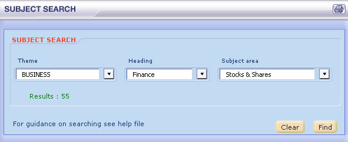

Open the subject search function from the search menu. Use this function to group words according to subject. Narrow your search using the drop down menus for theme, section and subject area. The results will open in a new window.

You can also see how words are grouped according to subject by clicking on the 'word set' button at a dictionary entry.